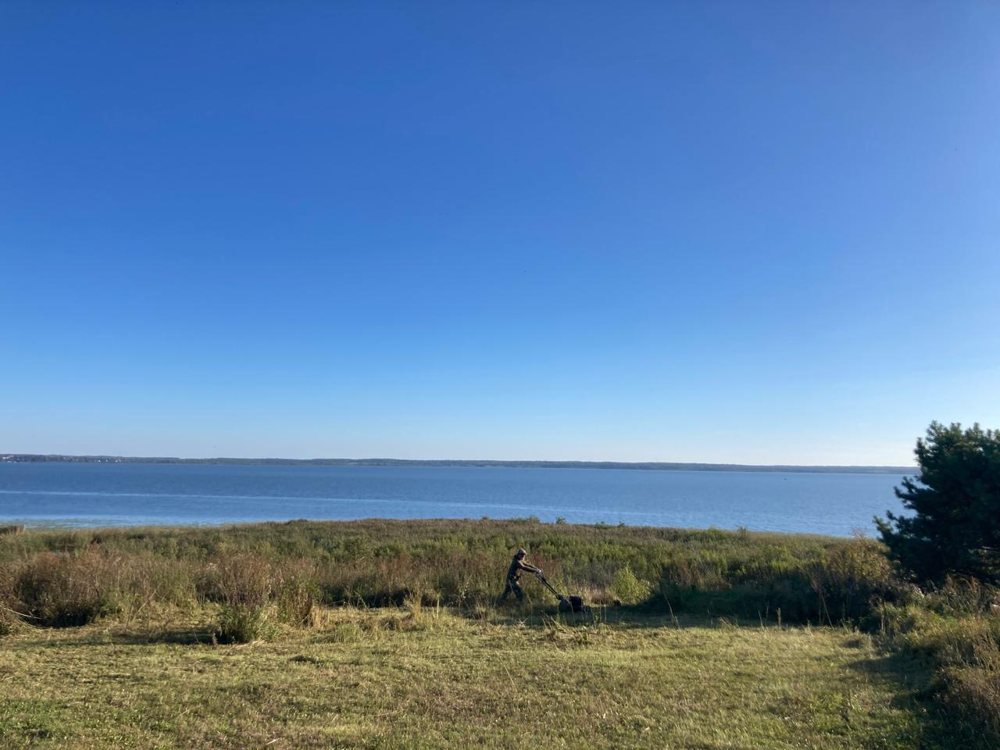

История Чухломского края

Святое болото, расположенное в Чухломском районе Костромской области, является уникальным природным заказником, известным своей древней историей и значимостью как экологического, так и культурного наследия. Оно связано с Чухломским озером и является истоком реки Святицы. Святица — река, питаемая родниками, которые славяне называли «святиками». От них и болото, и река получили своё название.
На карте XIX века в Чухломском, Галичском и Солигаличском округах находилось большое количество храмов. Костромская губерния славилась как природными богатствами, так и архитектурным наследием — многие памятники под угрозой исчезновения.
Новгородские славяне называли финские племена, с которыми воевали, общим именем «чудь». Именно чудь населяла Чухломский край в IX веке — это были ассимилированные меряне. От них остались топонимы: Чухлома, Ножега, Точема, Подонгжа, Возега, Шендай и др.
Колонизация края шла из Великого Новгорода. Торговля, военные цели и христианизация способствовали заселению. Так появился христианин Авраамий Чухломский, основавший три монастыря: Великую, Верхнюю пустыни и Городецкий монастырь у Чухломского озера. Это дало толчок к появлению новых сёл.
Край был частью Галичского княжества. В XIII–XIV веках управлялся потомками Александра Невского, пока Иван Калита не присоединил его к Москве. С XVI века — под управлением московских бояр.
Казанские татары с 1485 по 1565 грабили край 15 раз, оставив 824 пустоши. По приказу «Галичской четверти» край управлялся из Москвы. Последний князь — Дмитрий Шемяка, известный «шемякиным судом».